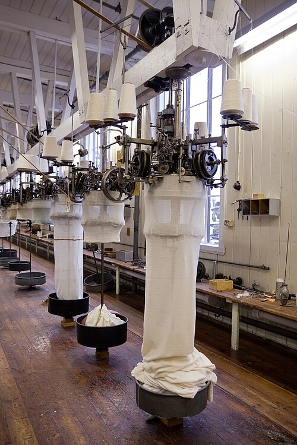

Find an intermittent yarn-stop fault on a knitting-machine trainer
Follow one feeder station from yarn path and detector to cable and displayed stop before quoting a controller.
Follow the thread and find the station that called for a stop
A circular knitting machine draws yarn from many packages. Each route can include a feed unit, tension or break detector and a guide into the knitting head. A slack or broken yarn, a dirty or sticking detector, and an intermittent harness can all produce a stop complaint. A local indicator can identify a station while the central display reports a group. Ask for the station number, exact message and whether the fault follows yarn, vibration, a warm machine or a recent change.

Photo by Hanne Dale / Tekstilindustrimuseet, resized. Original photo · CC BY-SA 4.0.

Watch a positive feeder work · Pause to find the yarn entry, driven feed wheel, indicator and exit path. The lower yarn detector is a separate device on systems that use one. Look up the exact product and controller together. Memminger-IRO MPF L positive feeder · UFW detector photo and function · MPF L product photos and data.
See machines at the Ludhiana garment machinery show. Identify which units are flat knitting machines, then compare their layout with a circular machine. The video shows a supplier and workshop equipment. Use the manufacturer’s published procedure for service. Ludhiana exhibitor walkthrough.
Build a two-station stop circuit on the bench
Use a switched 3×AA holder, two normally closed lever switches, a red or green LED, a 330 Ω resistor and clip leads. Connect battery positive → resistor → LED anode, then LED cathode → switch A → switch B → battery negative. The lamp means run permissive in this example, and drives no machinery. Label two extension harnesses and clip each switch to its own pair. Confirm both closed makes the lamp glow.
Actuate A then B separately. Each must extinguish the lamp. Pull one connector on the battery trainer and verify that its open cable also drops the lamp. A machine may instead use another switch polarity, a bus or a powered sensor, so obtain its own wiring diagram before any test. Keep real equipment’s stopping and guarding intact.
Use a loose clip to make an intermittent open in B. With power off and the individual passive harness detached at both ends, check each conductor end to end while gently flexing it at the clip and strain relief. Compare with the identical healthy trainer harness. Check the switch itself separately for repeatable action. If the switch repeats and the isolated harness flickers between a low reading and OL, the cable fault is proved. Restore the trainer and repeat ten actuations of each station.
| What repeats | How to verify the branch |
|---|---|
| The stop follows a particular yarn path. | Work with the knitting technician to compare guide alignment, tension, contamination and yarn on an equivalent feeder. |
| Only one number fails, and the disconnected harness opens when flexed. | Record the station and connector, then quote the compatible lead or refer the connector repair. Log a stable repeat check. |
| Several stations disappear together. | Collect the group, shared circuit identifiers and exact alarm for the controls specialist to check common supply or communications. |
Start with a job the local mechanic can refer
Ask for a loose passive detector or harness with a matching reference. Photograph its ID and condition and bench-test it before handling urgent production work. Keep contact measurements separate from symptoms that need the whole machine. Closed and guarded installed testing belongs to the trained machine operator or service technician. Agree how they will verify a stop and normal guarded operation before the next production run. Example of a Ludhiana knitting-machine service business.